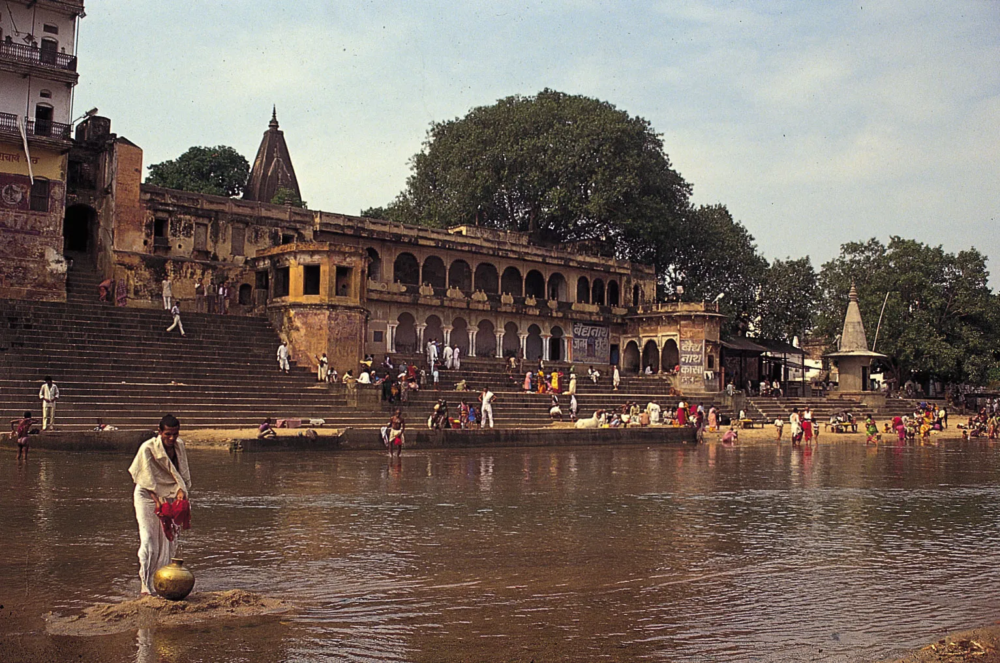
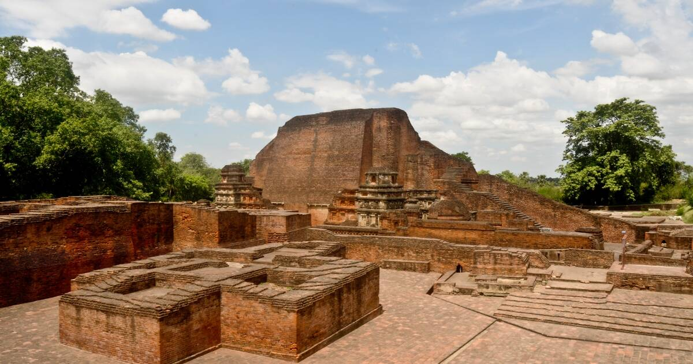
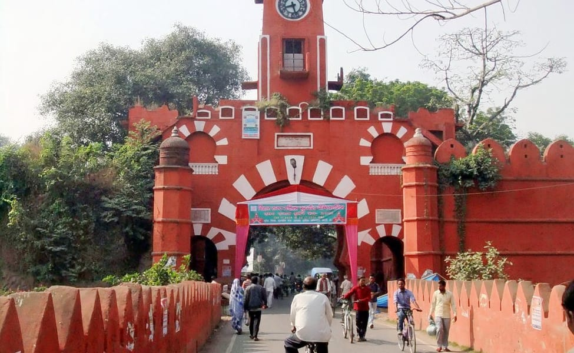
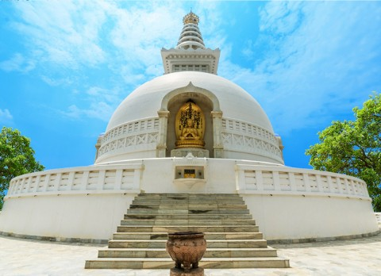
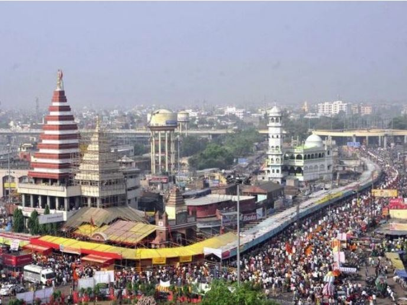
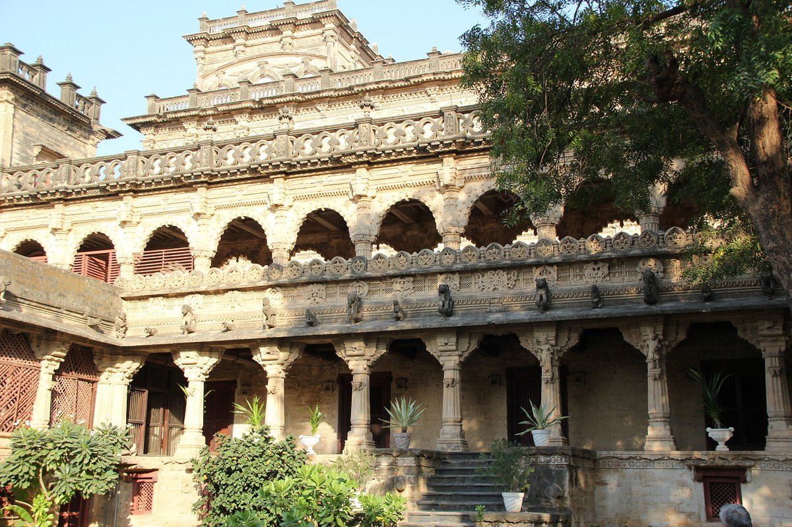

Bihar is a state in eastern India. It is the third-largest state by population and twelfth-largest by territory, with an area of 94,163 km2 (36,357 sq mi). Bihar borders Uttar Pradesh to its west, Nepal to the north, the northern part of West Bengal to the east, and with Jharkhand to the south. The Bihar plain is split by the river Ganges, which flows from west to east. Bihar is also the world's fourth-most populous subnational entity.[citation needed] On 15 November 2000, southern Bihar was ceded to form the new state of Jharkhand. Only 11.3% of the population of Bihar lives in urban areas, which is the lowest in India after Himachal Pradesh. Additionally, almost 58% of Biharis are below the age of 25, giving Bihar the highest proportion of young people of any Indian state.The official languages are Hindi and Urdu, although other languages are common, including Maithili, Magahi, Bhojpuri and other Languages of Bihar.

Amongst the most famous places in Bihar is Gaya, which is a Hindu pilgrimage hub and a transit point for Buddhist pilgrimage centre of Bodhgaya. It is believed that it was here under the tree that Buddha attained enlightenment. Gaya is a busy city situated on the bank of River Phalgu and it is replete with many temples and historic sites dating back to different eras that stand as the evidence to the successful rule of Maurya and Gupta dynasty here. The glory of Gaya was extended so much so that even Hiuen Tsang could not resist mentioning it in his travelogues.

Probably the oldest university in India, Nalanda is an important site to visit in Bihar. A perfect reminisce to the time of flourishing Gupta and Pala period, Nalanda is an acclaimed tourist attraction in Bihar. It is believed that the last and most famous Jain Tirthankara, Mahavira spent 14 monsoon seasons here. Even, Buddha is said to have delivered lectures near the mango grove in Nalanda. The fame of this education centre was to an extent that Hieun Tsang, the famous Chinese traveller visited here and stayed for atleast two years here. Even, I-tsing another famous Chinese voyager stayed at Nalanda for about 10 years, AND such was the glory of this place. Today most parts of Nalanda lie in ruins but the place is surely worth exploring.

Dubbed as the seat of Bihar School of Yoga, Munger is yet another place that is popular amongst the tourists in Bihar. The history of Munger dates back to Aryans, who called Munger the ‘Midland’ for their settlement. For yoga buffs, Munger is not an unknown name, thus we can expect a large foreign crowd thronging this place. The present day Munger is a twin city, which comprises of Munger and Jamalpur. Reckoned to be one of the oldest cities of Bihar, Munger was once the capital of Mir Kasim before it fell into the hands of British. The place has several historic relics that further add to the charm here.

Vaishali is an important archaeological site that was once the capital city of Licchavi rulers. Vaishali earned fame as a birthplace of last Jain Tirthankar Lord Mahavira. It is believed that Mahavira was born and brought up in 6th century BCE in Kundalagram of Republic of Vaishali. Another major event this place was a witness to was the last sermon of Buddha in 483 BCE. Vaishali was a prosperous kingdom during the time of Buddha, it is also known for its beautiful courtesan Amrapali. So, you see, one has enough to recall in Vaishali and adding to its historic charm is the well-preserved Ashokan Pillar. This ancient city finds mention in the travel accounts of eminent Chinese travellers like Fa-hien and Hieun Tsang.

Situated on the southern bank of Ganga, Patna is the largest city of Bihar. Better known as Patliputra in ancient India, the city is also believed to be the one of the oldest continuously inhabited cities in the world. Patna is a pilgrimage for Sikh devotees as it is reckoned to be the birthplace of last Sikh Guru, Guru Gobind Singh. The city flourished in the period of Haryanka, Nanda, Mauryan, Shunga, Gupta and Pala earned fame all across India. Today’s Patna is a developing city, which is endeavouring to match up to the modernization; malls, high-end hotels and theatres have cropped in the city. However, Patna has to speed up a bit to become the part of other cosmopolitans. Altogether, Patna is a decent destination, with most of the modern facilities available.

Lying in ruins, Navlakha Palace is situated in Rajnagar near Madhubani in Bihar. This palace was built by Maharaja Rameshwar Singh and said to have suffered extensive destruction during an earthquake in 1934. No renovation was done after the destruction, thus this palace remains in ruins now. It is a royal palace and even though it has been damaged so much, one can still marvel at its architectural brilliance. The palace complex comprised of gardens, pond and temples.
Kakolat Waterfall
Karkat Waterfall
Telhar Waterfall
Manohar Kund and Dhua Kund Waterfall
Satdhara Kund
Surya Kund
Makhdum Kund
Brahma Kund
Nanak Kund
Lakshman Kund
Rameshwar Kund
Gaumukh Kund
Sita Kund
Rishi Kund